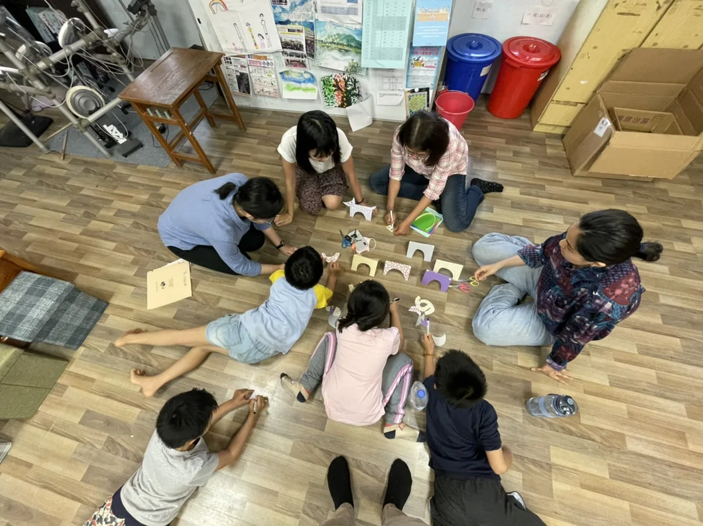
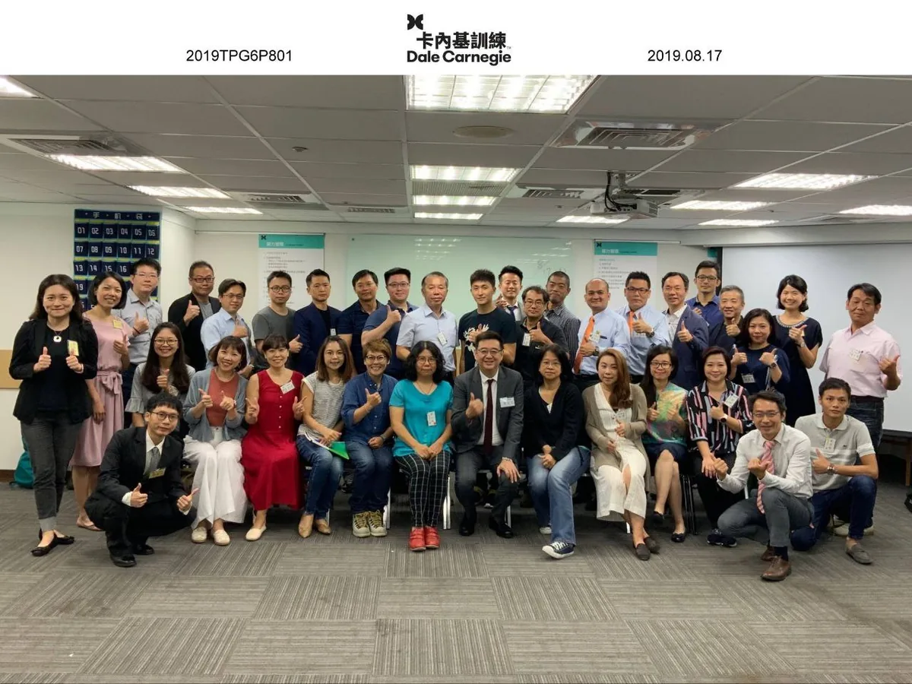
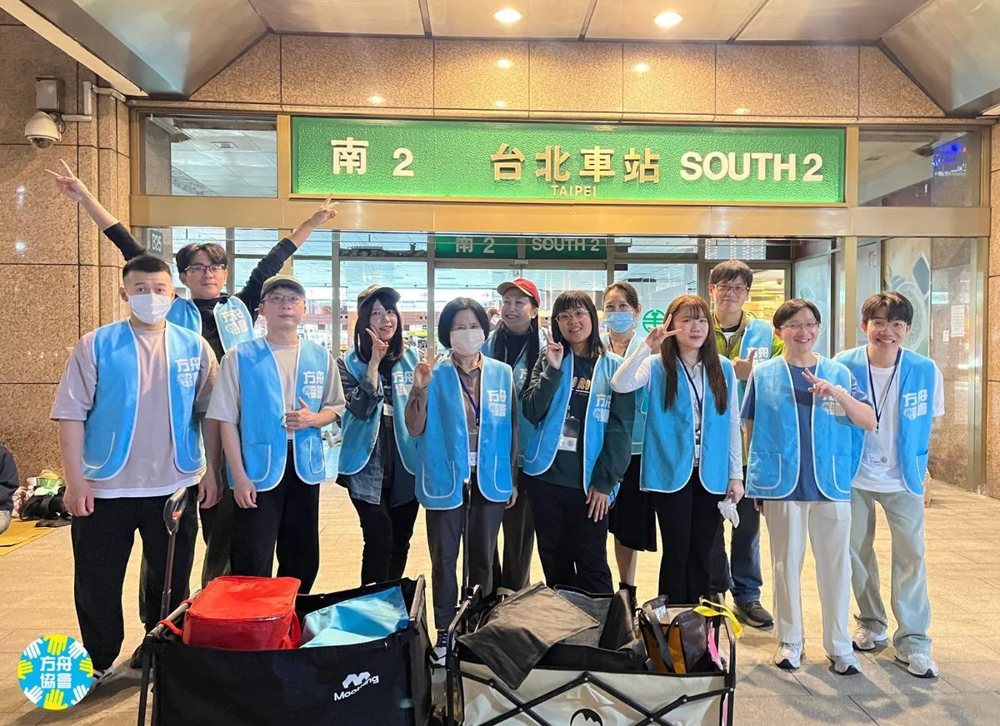
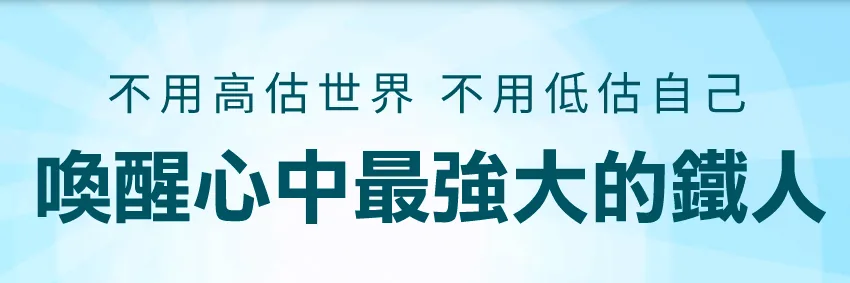

Ted Kuo
郭泰宏，台北
10+ 年 SEO 策略規劃與實務經驗。專注於協助品牌在 AI 搜尋時代脫穎而出—不只提升自然流量，更強化在 AI 搜尋引擎與 LLM 中的引用可見度。曾服務電商、旅遊、Fintech、製造、醫美、教育、新創等多產業，擅長從企業核心需求出發，量身打造可執行的 SEO 策略。
- 目前專注
- GEO & AI SEO
- 核心框架
- GAC (Generative Answer Chain)
核心職能
- Generative Engine Optimization (GEO)
- AI Search Citation Visibility & Semantic Framework Design
- Entity-First SEO
- Structured Data / Schema Markup Strategy
- LLM Readiness
- Content Extractability & AI Indexing Optimization
- Technical SEO
- JavaScript Rendering Diagnostics, Indexability & Crawl Budget Optimization
- Content & On-Page
- Search Intent Mapping & Topical Authority Strategy
- Global SEO
- International & Cross-border Architecture (APAC & Global Markets)
- Tracking & Dashboards
- GA4 / GSC / GTM Implementation & Visualization
- Growth Engineering
- A/B Testing, PDCA Cycles & Data-driven Experimentation
- Strategic Planning
- SEO Roadmap, Impact-First Prioritization & Resource Allocation
- Team & Stakeholder
- Cross-functional Synergy (Product, Dev, Content), Mentoring, SOP Building & KPI Reporting
工作經歷
主導全球前 50 大 FameEX 加密貨幣交易所的 SEO 增長策略，統籌技術、內容與多語系優化專案，成功在競爭激烈的 Fintech 市場建立品牌權威。
- 績效突破 制定並執行全方位 SEO 增長駭客策略，於一年內實現品牌能見度 (Brand Visibility) 成長 773%，大幅超越預期目標。
- 技術優化 主導平台技術 SEO 架構重整，優化核心網頁指標與多語系 (Hreflang) 配置，顯著提升全球搜索引擎抓取效率與自然曝光。
- 跨部門協作 擔任產品、開發與內容團隊間的 SEO 顧問，將 SEO 標準導入產品開發流程，確保新功能上線即具備搜尋優勢，並建立數據導向的內容行銷。
參與全球線上旅行社（OTA）亞太區擴張專案，主導台灣市場 SEO 策略規劃與執行，成功提升自然搜尋曝光與用戶獲取成效。
- 實驗期間優化目標頁面類型，平均排名提升 5.64 位，點擊率成長 44.23%
- 維持核心關鍵字排名穩定性，即使面對演算法更新仍無顯著波動
負責規劃與執行 SEO 專案，提升網站自然流量與搜尋曝光。工作內容包含：制定 SEO 策略、關鍵字研究、內容與技術 SEO 優化、跨部門專案協作，以及追蹤並分析 SEO 成效，確保專案按期推進。
- 主導多產業 SEO 專案（電商、旅遊、醫美、製造、Fintech）從策略規劃到落地執行，協調工程、內容與業務團隊，確保 KPI 達成
- 專精跨境 B2B 多語系佈局，服務 SaaS 與高階醫材客戶，提升全球曝光度與品牌指名度
- 帶領 3 人 SEO 團隊，建立知識庫與專案管理制度（HackMD / Trello），落實教育訓練，提升團隊技術能力與協作效率
- 指導團隊導入 GTM 與 JavaScript（DOM 操作）技術，突破系統限制，解決工程排程瓶頸
- 導入 Looker Studio 數據視覺化報表，強化客戶溝通與成效呈現
- 內容行銷光速戰
從需求出發，擬定有效策略：1.找出自身優勢、了解搜尋需求 2.消費者歷程與關鍵字策略 3.主題分類、分析意圖 4.內容產出的注意
- 智能行銷時代來臨！SEO革命
搜尋意圖探索，如何洞察消費者需要的內容線索：•如何找到有價值的內容？•了解消費者搜尋數據 •從搜尋線索歸納內容需求
- 內容行銷光速戰
- SEO 技術檢測與優化 執行網站技術健檢，針對網站架構、爬蟲索引 (Crawlability) 及 GSC 錯誤進行除錯，確保網站具備良好的搜尋體質。
- 關鍵字佈局與內容策略 進行關鍵字研究與競品分析，發掘內容缺口 (Content Gaps)，提供具體建議協助內容團隊產出高排名文章。
- 數據監控與成效分析 追蹤自然搜尋流量與關鍵字排名變化，定期產出成效報表，並提出後續優化的迭代建議。
管理 3 人網站開發團隊，負責多項專案並行規劃與時程控管，確保專案依目標順利完成。跨部門協作，包括行銷、設計與工程團隊，確保網站功能、需求與成效一致。主導並參與多類型專案，如保險公司前台網站開發、內部系統開發、行銷活動頁維護及企業網站建置。
學歷
國立中央大學
學士，2010–2014
語言
中文 母語
英文 工作熟練（書寫佳，口說堪用）
專案經歷
挑戰與策略 在台灣市場近兩年未進行深度優化的情況下，首先對全球 OTA 的多元頁面模板進行全面診斷，找出非品牌流量下滑的核心原因。針對高影響力頁面優先處理，並透過競品分析與 AI 在地化內容更新，補齊關鍵字缺口，重建主題與搜尋意圖的相關性。
- 反轉下滑趨勢 優先頁面平均排名提升 5.64 名，CTR 成長 44.23%。
- 市場適配度提升 透過在地化內容強化台灣市場的搜尋相關性，重新取得在地 OTA 競爭優勢。
挑戰與痛點 網站面臨嚴重的技術性 SEO 瓶頸（索引異常、JS 渲染問題、CMS 限制），且內容策略零散，缺乏主題權威性，導致品牌曝光受限。
策略方向 執行全方位的「網站體質重構」。從底層解決爬蟲與渲染障礙，並將內容策略從單點關鍵字升級為「主題叢集 (Topic Clusters)」，建立連貫的議題權威度。
- 年度爆發性成長 隨著技術債清除與架構優化，年度搜尋曝光量驚人成長 773%。
- 持續性動能 成長趨勢延續至 2025 年，第一季點擊量同比成長 45%，第二季更達 73%。
- 技術難題突破 成功解決複雜的 CMS 與前端渲染問題，確保核心商業頁面被完美索引。
整合季節性行銷日曆與 SEO 佈局，深入分析使用者搜尋意圖 ，在旅遊旺季前精準搶佔高轉化關鍵字。
- 流量爆發性成長 季節性活動著陸頁 (Landing Page) 點擊數成長 53 倍 (+5,345%)，大幅提升品牌在旺季的能見度。
- 新產品線佈局 成功協助新開發的旅遊路線建立搜尋優勢，搶佔初期市場流量。
- 深度旅遊頁面優化 針對主題性深度旅遊行程進行內容優化，帶動該分類流量成長 400%。
策略方向 針對網站改版後的流量震盪，導入「使用者搜尋旅程」分析，針對認知（排名）、考量（簡介）、決策（課程）三階段制定差異化內容策略。
- 課程頁面爆發成長 針對高轉換價值的「課程搜尋頁」，創造出 1,525% 的點擊成長與 729% 的曝光提升。
- 全漏斗流量優化 成功帶動上層流量「大學排名頁」成長 139%，以及中層流量「學校簡介頁」成長 837%。
- 超越歷年表現 網站改版後不僅完全恢復流量，整體成效更遠超去年同期水準。
策略方向 針對 B2B 採購決策流程，鎖定「產品規格」與「功能性」關鍵字，全面網羅資訊型與交易型搜尋需求。
- 短期顯著成效 無塵室設備商網站在上線 5 個月內，搜尋點擊成長 120%，曝光量提升 130%。
- 核心產品流量翻倍 針對重點產品單元進行優化，成功使核心規格產品的搜尋流量翻倍成長。
- 精準商機網羅 有效提升高價值的「功能型關鍵字」排名，直接帶動潛在客戶的詢價機會。
策略方向 深入分析美國 SERP 競品對一般消費者的溝通語言與強調重點。策略核心在於將生硬的醫療專業規格，優化為大眾易懂的搜尋語彙。
- 排名超越競品 核心產品與功能型關鍵字快速登上 Google 首頁，成功超越海外既有競爭對手。
- 流量光譜擴大 成功打破專業醫材的流量天花板，同時吸納高階需求與一般大眾流量。
策略方向 針對競爭激烈的美國市場進行策略重整。避開與大型競品在廣泛關鍵字的直接對撞，轉而鎖定高轉換意圖的精準需求，發掘市場缺口。
- 跨境流量爆發 策略調整後同期比較，搜尋點擊成長 20 倍，曝光量成長 13 倍。
- 擊敗海外競品 核心產品字與功能字成功攻佔 Google 首頁，在利基市場中取得排名優勢。
公益與分享

VOVA 學田國小度假教育志工
金車文教基金會
偏鄉教育志工｜深入花蓮富里，縮短教育距離。實際走入花蓮富里鄉的偏鄉小學，深刻體會城鄉教育資源的落差。除了提供課業輔導，我更重視與孩子們的互動與生活陪伴，期許透過耐心傾聽與引導，為缺乏資源的學童帶來正向的成長動力與自信。
前往網站 (VOVA 學田國小度假教育志工)棲地復育志工
荒野保護協會
手作修復濕地，實踐環境永續。投身陽明山萬里溼地的復育工作。為了保護生態，我們完全捨棄大型機具，依靠團隊協作與雙手，將廢耕梯田重塑為適合物種棲息的生態池。這段經歷不僅是體力的付出，更是我對環境永續最直接的實踐與承諾。
前往網站 (棲地復育志工)
高階主管班志工
卡內基訓練 Dale Carnegie Training Taiwan
擔任高階主管班助教，協助企業領袖優化溝通與領導力。在輔導過程中，不僅強化了自身的教練 (Coaching) 引導技巧，更從高階視角深化對組織管理與人際動力的理解。
前往網站 (高階主管班志工)
無家者送餐志工
社團法人方舟協會
這是每週二晚上的固定承諾。從備料、烹煮到親手將餐點送到台北車站無家者手中，我堅持透過實際行動傳遞溫暖。這段經歷讓我學習在服務中實踐同理心，並持續關注社會角落的需求。
前往網站 (無家者送餐志工)
第 12 屆 iT 邦幫忙鐵人賽
UI設計入門：SEO 尬網路行銷 系列
SEO 與 UI 的跨域整合。完成連續 30 天不間斷的技術寫作挑戰。跨域整合 SEO 專業與 UI 設計思維，將專案實務轉化為系統性知識。這不僅展現了我的恆毅力，更強化了我以「使用者體驗」為核心的數位行銷視野。
前往網站 (第 12 屆 iT 邦幫忙鐵人賽)